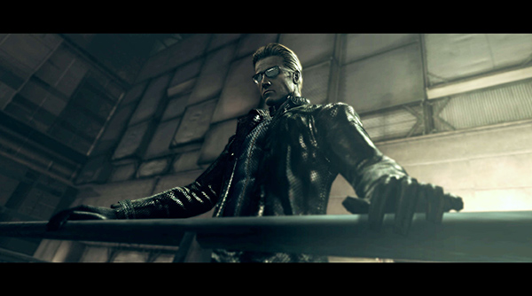

Chris Redfield started the franchise off as one of the members of Alpha Team S.T.A.R.S.. Although Chris' first appearance was in RE1, as one of the playable characters with Jill Valentine, he is most known in RE5 when he quite literally punches a boulder within a volcano.
Jill's first appearance was in RE1 as one of the playable characters alongside Chris. She also was part of Alpha Team S.T.A.R.S. but became BSAA with Chris. She is known for her skills in unlocking and for her “Jill-sandwich” lines.
Leon's first appearance was in RE2 as a rookie cop alongside Claire Redfield as one of the playable characters. But he is most known for his appearance in RE4 and his one liners like “where's everybody going? bingo?”.
Claire's first appearance was in RE2 looking for her brother, Chris. She is most known for her skills with a motorcycle. She has also appeared in other games like Code Veronica and Revelations 2.
Wesker is the franchise's most popular villain. His first appearance was in RE1 but he is most known for his appearance in RE5. He is known for his line “7 minutes, 7 minutes is all I can spare to play with you.” in RE5.
Ada's first appearance was in RE2 when she introduced herself as FBI to Leon. But she is most known for her appearance in RE4 taking orders from Wesker.